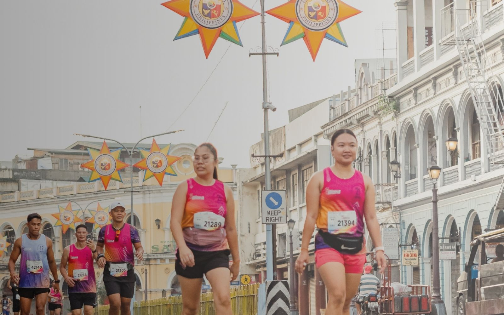
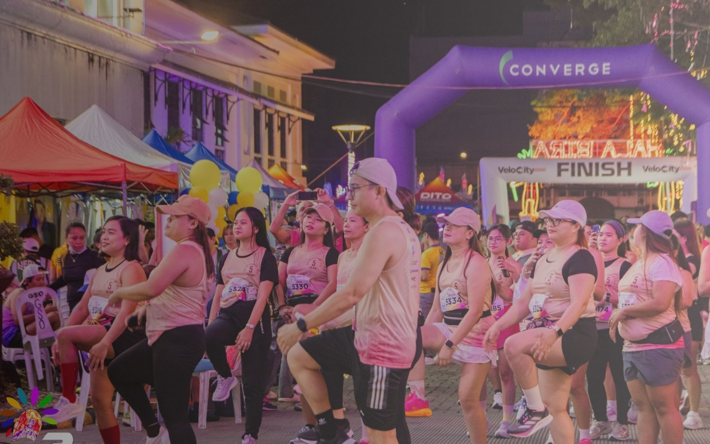
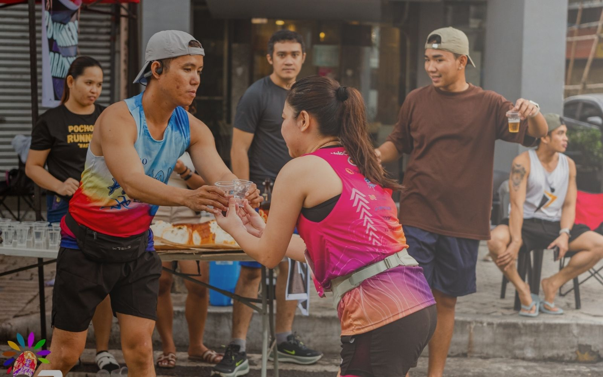
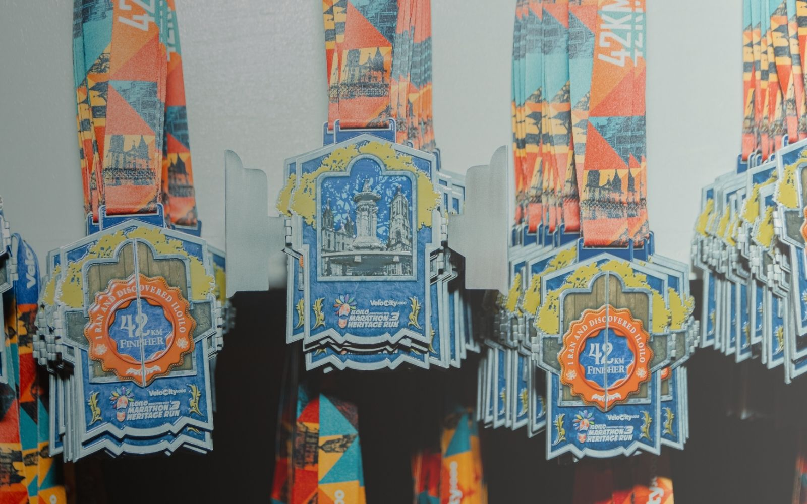
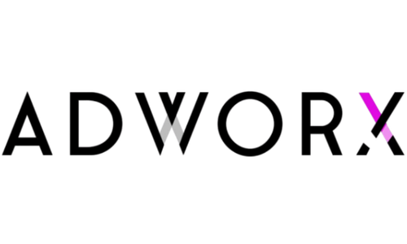
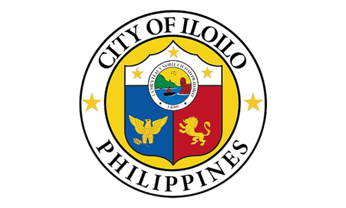
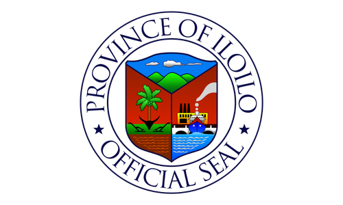

January 17, 2027
Early Bird Registration Ends
CHOOSE YOUR CHALLENGE
Whether you're taking your first 5K or conquering the full marathon, Heritage Run 4 offers a distance for every runner.
Perfect for first-time runners, families, and anyone looking to experience the Heritage Run atmosphere.
A balanced challenge for runners ready to build speed, endurance, and confidence.
Run through Iloilo City's historic streets while taking on the classic half marathon distance.
The ultimate Heritage Run experience for runners seeking to conquer the full marathon.
REGISTRATION FEES
Register on or before August 31, 2026 and enjoy discounted rates.
Registration includes RFID race bib, official race singlet,
finisher medal, post-race refreshments, and event support.
10K, 21K and 42K participants will also receive an
official finisher shirt.
RACE INCLUSIONS
Every registered participant receives premium race essentials designed for the Heritage Run experience.
Official race bib with RFID timing chip.
Official Heritage Run event singlet.
Awarded to every official finisher.
Recovery snacks and refreshments after the race.
Official finisher shirt awarded to all 10K, 21K and 42K finishers.
Download high-quality photos captured by our official event photographers.
WHY RUN HERITAGE RUN?
Heritage Run is more than a marathon. It is a journey through Iloilo's history, culture, and the vibrant running community that welcomes every participant.

Pass through Calle Real and the city's historic district while discovering the rich heritage that makes Iloilo one of the Philippines' most beautiful destinations.

Run in the heart of Iloilo where the city's world-famous Dinagyang heritage, culture, and festive atmosphere create an unforgettable marathon experience.

From energetic hydration stations to dedicated volunteers, every kilometer is backed by a passionate community committed to giving runners the best race-day experience.

Every kilometer brings you closer to an exclusive Heritage Run finisher medal—a lasting symbol of your determination, perseverance, and unforgettable journey through the streets of Iloilo.
HERITAGE RUN JOURNEY
From a local dream to one of Western Visayas' premier marathon events, Heritage Run continues to grow with every edition.
Our inaugural Heritage Run.
Building a stronger running community.
Going International.
Our most ambitious edition yet.
Expected Participants
Editions
Race Distances
International Participants
IN PARTNERSHIP WITH
Working together to deliver an exceptional race experience.



ORGANIZED BY